这大概是我第六次从芝加哥转机，却也是我第一次选择为这座Carl Sandburg诗中"巨肩之城"的繁华所驻足。原因有二；一是国际航班的漫长只想到便让人疲于观光，二是更主要的，各种因素导致下，总未找到人与我同行。我想，是这丑陋与激情并存的大都市，专属的那份无边的繁荣与喧嚣让我产生了犹豫。在这不知疲惫运作的城市里，一个年轻的异乡人孤独的身影，单薄的就像悬在刀尖上的蝶，或将被这座风城高楼大厦间的那股奔波的风与雪，毫不费力的吹散、消逝。
认识自己的渺小不是一件好受的事情。而芝加哥的熙攘和高楼却又好似无时无刻的向在它街头漫步的每一位行人提醒着这一点。没有人会不想为它的绚丽所停留，看天高地迥，觉宇宙之无穷，感叹我们自身文明的壮阔。但也总是不免兴尽悲来，识盈虚之有数，总有些虚无与迷茫。但想起书本中的智者，那告诉我们人之为人之为何的先知，我的顾虑反而解开了——苏格拉底"认识你自己"的箴言，最初刻在德尔斐神庙上，它不是安慰，而是提醒：勿忘你的天性和在世界中的尺度。
AIC — 芝加哥艺术博物馆
此行的主要目的是参观芝加哥艺术博物馆AIC。首先奔向的是世界闻名的印象派馆藏——如果说进门最显眼的那幅《下雨的巴黎街道》让人感到一丝似曾相识，那么再往里走C位处修拉的《大碗岛的星期天下午》则唤起了我那懵懂天真、那曾畅想长大后要成为画家的年纪时的全部记忆。
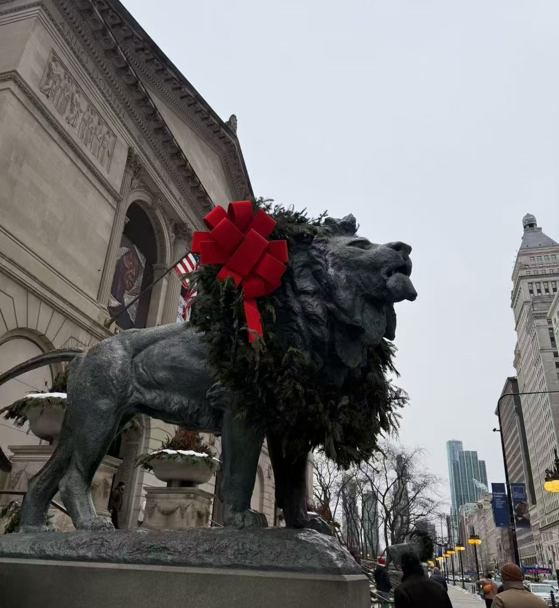
The Art Institute of Chicago
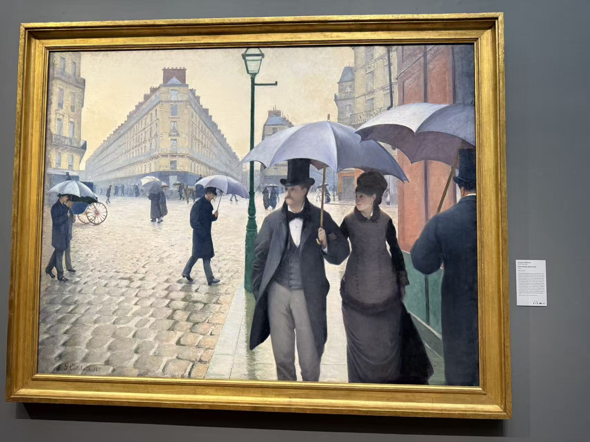
Caillebotte · 下雨的巴黎街道 · 1877
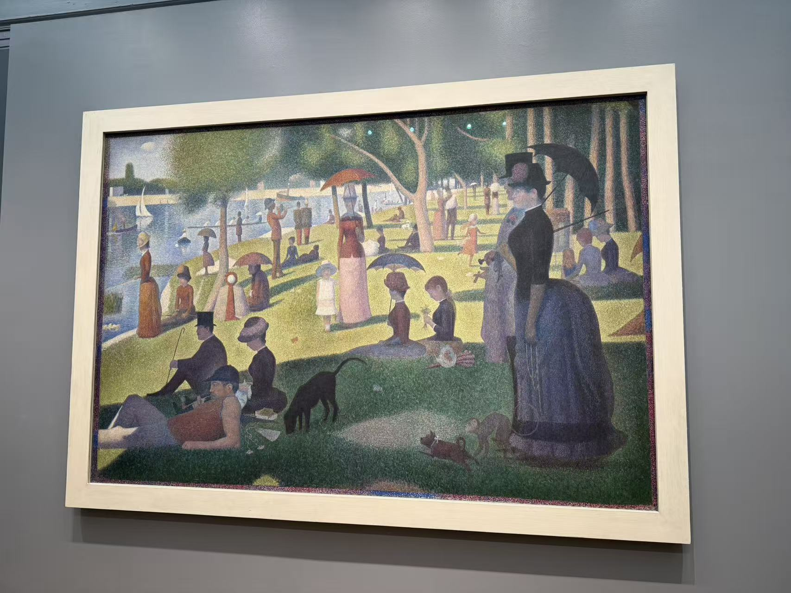
Seurat · 大碗岛的星期天下午 · 1886
这幅画，和我今天所观赏的许多名作，都曾是我美术课本里被用铜板纸打印，以大量篇幅介绍的艺术瑰宝。我曾经在课间摩挲着那亮面的画册，试图看清修拉的点彩；第一次看到《美国哥特式》这幅画，虽然看不懂它的象征意义，却也被这带着些诡异与强秩序感画面里，那拿着三齿草叉男女的严肃所吸引；还有对梵高和莫奈的欣赏，想必不用多做解释。
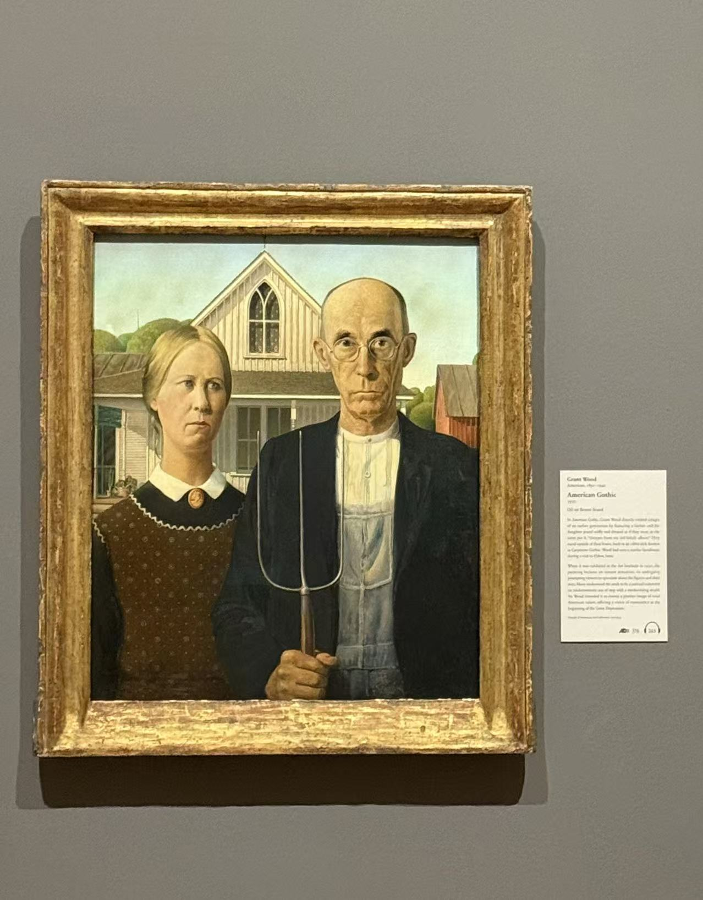
Grant Wood · 美国哥特式 · 1930
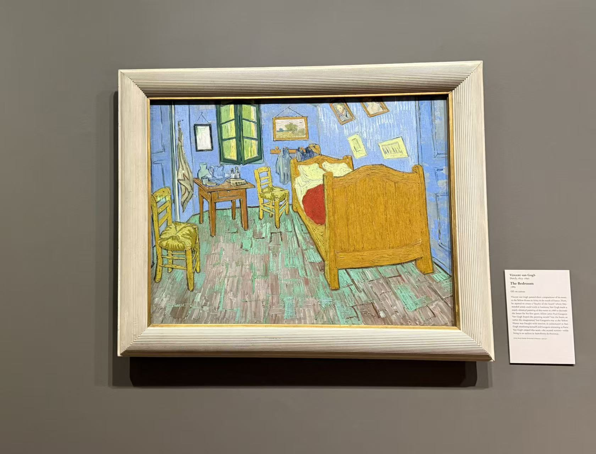
Van Gogh · 卧室 · 1889
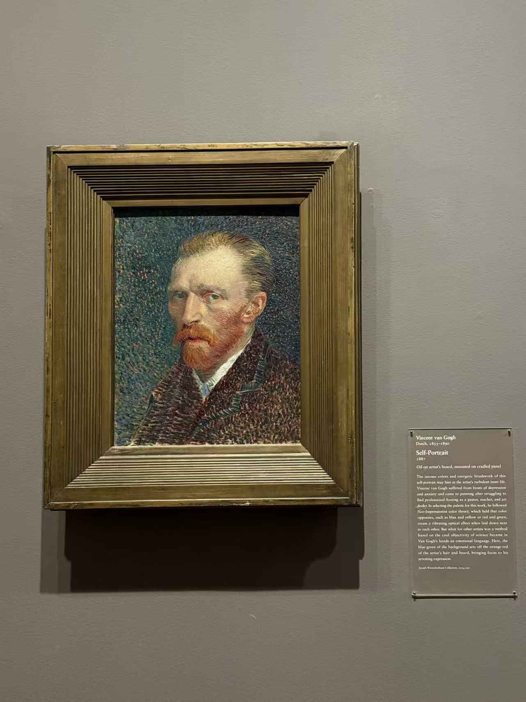
Van Gogh · 自画像 · 1887
这些曾经被我在学习间隙里用来抚慰心灵，反复翻看欣赏的世界名画，这些在儿时脑海里神秘、遥远以及伟大的作品，现在却离我不及一步之遥。凑近看，那课本上模糊的点彩细节如今却清晰的出现在我的面前。展馆里莫奈和梵高画作上的笔触是如此鲜活与分明。那些时刻我感到这一切是多么的不可思议，我已经成长了这么多，只身来到了在了我以前想都没想过能够拜访的远方。我想，艺术带给人的那种特殊的体验，和这种由艺术带来的联结，正向我们展示，人生是充满可能性的，生命是奇妙的，人性是伟大的，灵魂是共通的。
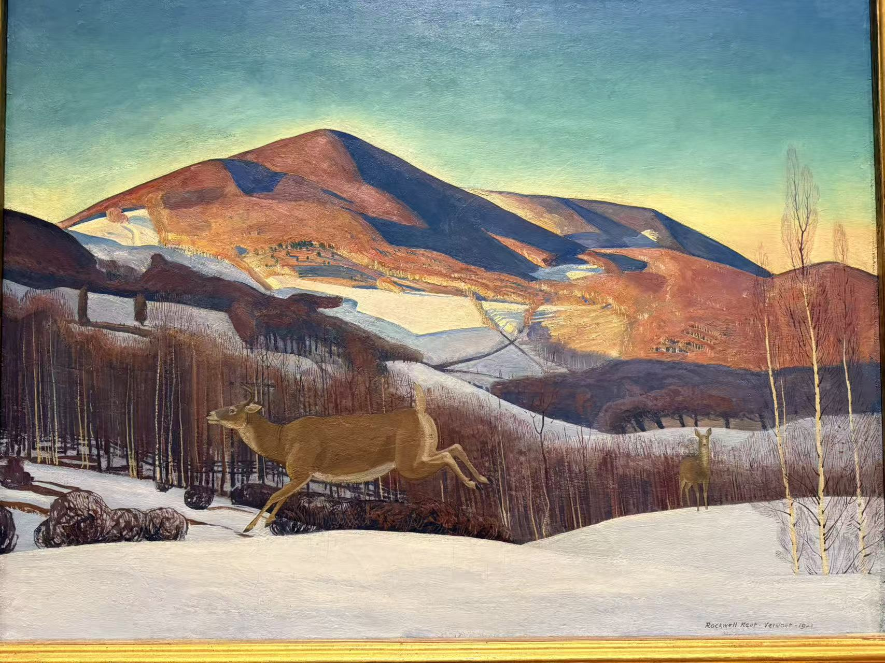
Rockwell Kent · Vermont · 1922
古典与永恒
参观到欧洲古典油画里那些具有几何构图美学、色彩与光线融合完美的静物时，我开始思考这种美的来源。就像欧氏几何那为形而上学所向往的完美公理，这些被奉为经典的作品的魅力不仅来源于想象力和活灵活现的画技，而是一种灵性的表达。理性和意识的碰撞让画面具有了特殊的感染力，这是肉眼所见的现实景象和经镜头扭曲的摄影照片所无法企及的。就像几何学的美感来源于它的"完美"，它只研究现实中不存在的、能够被完美演绎的形状；艺术也一样，顺带一提文学也如此，它以现实为基底，通过艺术家对他们自身意识与灵的剖析，将一种无法直观表达的直触灵魂的感受传递给整个种族，为人类文明保有了一份不朽与尊严。
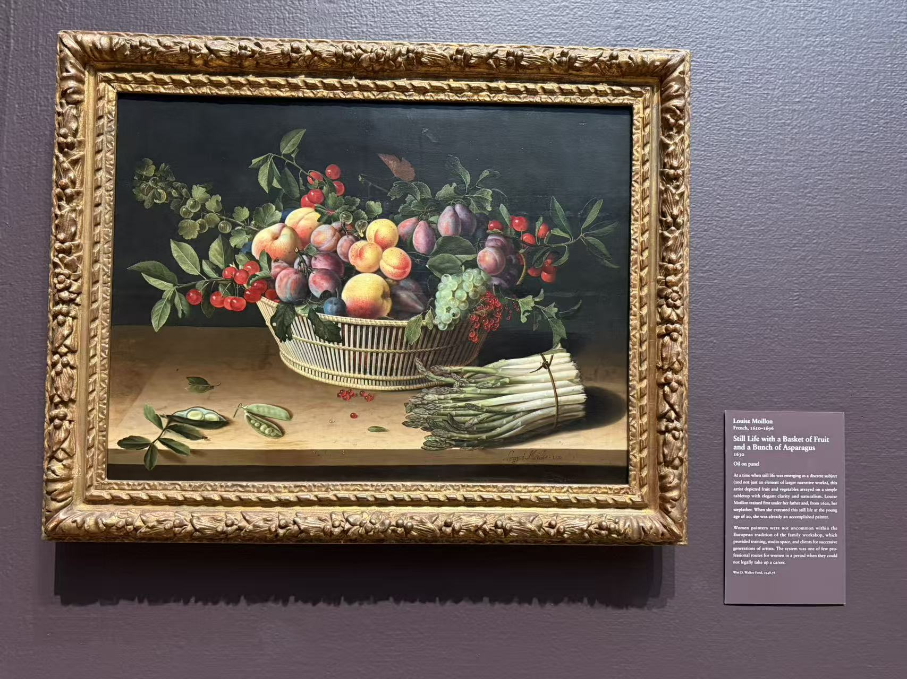
Edward Collier · Vanitas Still Life · 17c
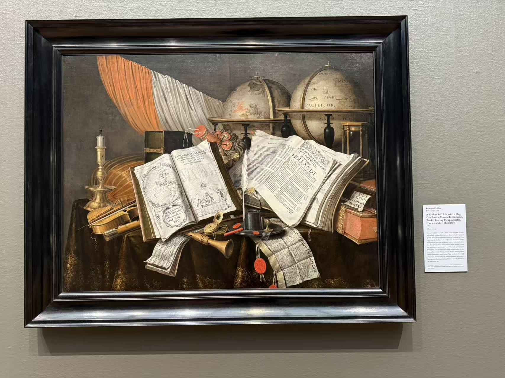
Louise Moillon · Still Life · 1630
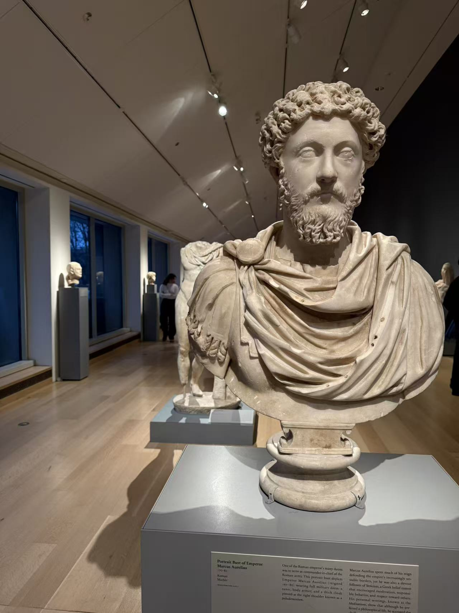
Greek, Roman & Byzantine Galleries
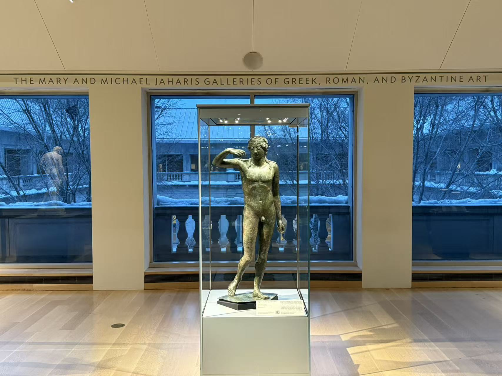
Portrait Bust of Marcus Aurelius · Roman · 161–80 AD
夜游者
感触最深的是霍普的代表作《夜游者》。这幅作品锐利的线条与分割、光影象征性的美学力量、极致的色彩把控，让张力与统一得以共存。那种solitude仿佛已从画框里溢出来，钻进观者的记忆深处。第一次肉眼观赏它让我有种说不出来的感觉，这幅画像散发着神秘的绿光，在你的耳边轻声描绘着一些关于本质与意识边界的隐约的轮廓。一种永恒。
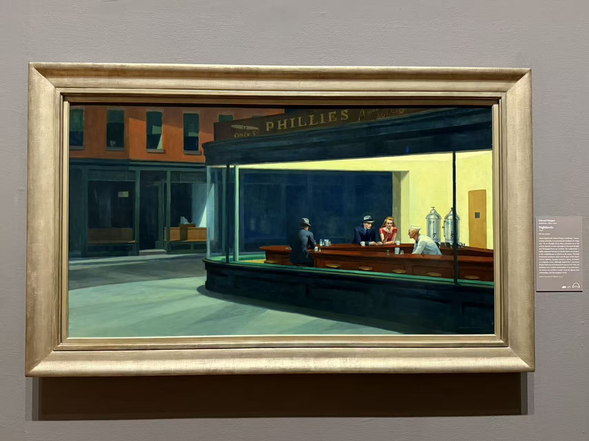
Edward Hopper · Nighthawks · 1942
艺术的魅力在于它引发你对自己及文明的思考。
也许是夜游者的背影让我回想起记忆里那些独自前行的时刻。Time flies，明天起程回国的一周后刚好是我19岁的生日。记得我第一次搭上来美国的航班，刚好是我法律意义上成人的那一天，也是我第一次独自去到这么远的地方。那时总觉得，命运是站在我身侧的，又或者说不管有没有所谓天命，我都相信我有能力创造与实现我所向往的价值。过去的这一年里，我尝试了许多新的事物，在充满最多未知的年纪里跌跌撞撞的找寻着方向，做过许多愚蠢的决定和不免有时迷失了对自我的认知、甚至这份对抗的决心。但磕绊与试错中，得益于那份从未改变过的求真的执着，幸运的产生了好的结果，我对我自己和世界有了更清晰的认识。
人生所有的方向、事业、追求，都不过是一种表达的形式，世事浮沉，能够保有强大独立的精神内核才是一个个体所能拥有的真正财富。爱默生："To be yourself in a world that is constantly trying to make you something else is the greatest accomplishment." 在一个不断试图改造你的世界里保持自我，是最伟大的成就。我想夜游者那股吸引我的美而独特的魅力，其实是我在那间惨白的餐厅里恍惚间看到了在独行中求索求知的自己的背影。
Palmer House Hilton
这篇随笔写于Palmer House Hilton，一所有着戏剧性的、百年历史的酒店。它曾是一位名为Potter Palmer的富豪送给妻子的礼物。然而仅仅开业13天后，这座皇宫便被芝加哥大火焚之一炬。Mr. Palmer最终再次豪掷千金的重造了它。值得一提的是这里是Brownie蛋糕的诞生之地。
今天芝加哥艺术馆里我参观的许多莫奈作品据流传似乎也是一位Palmer家族的女士捐献的。轻靠在有着些历史气息的床头上写下这些文字，小时候的回忆和芝加哥的夜景在脑海里交织，那些艺术品和它们背后历史更多的演变在我脑中滚过，对自我的反思和追求充斥我的大脑。此刻，一切的一切在我的意识里汇成一个认知。
世界在我脚下，历史伴我身侧，未来是我的舞台。